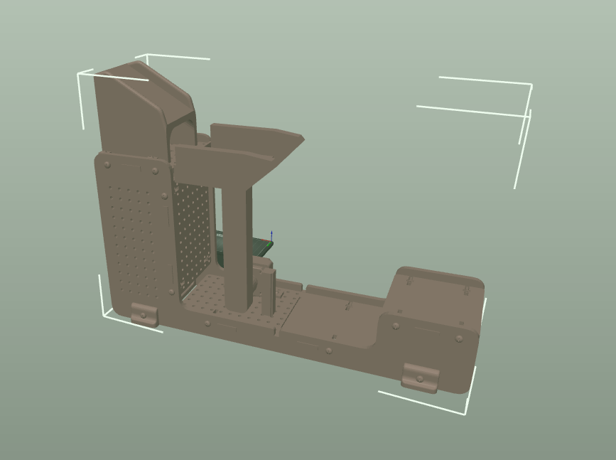
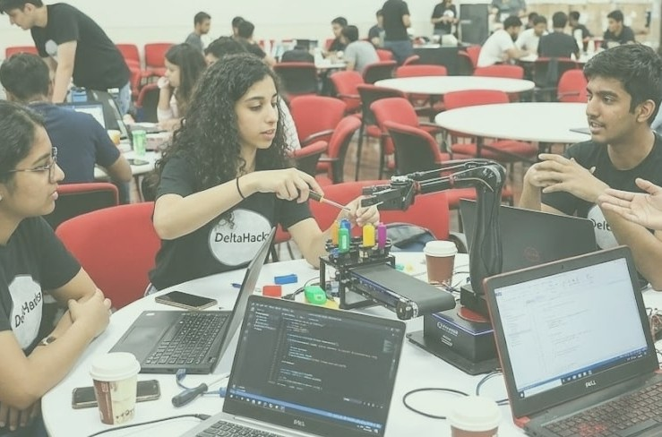
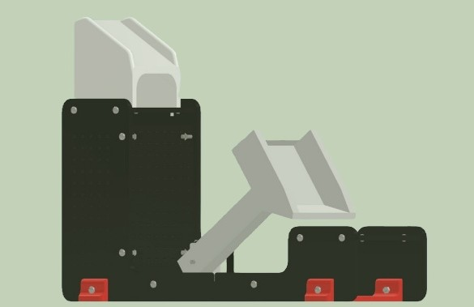
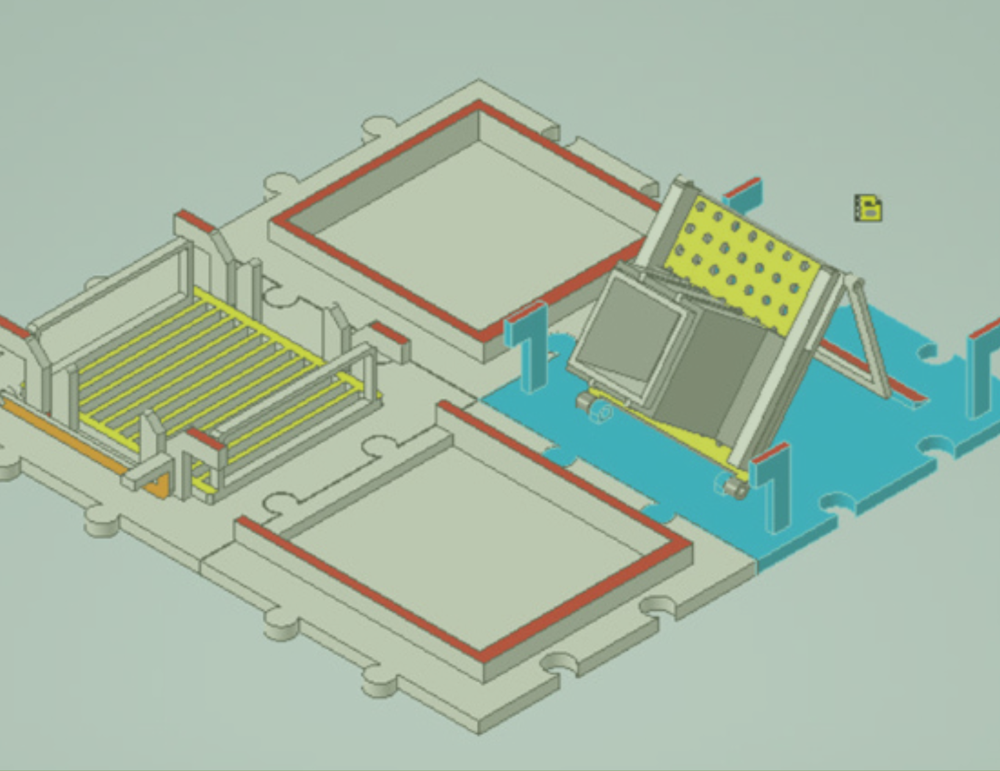
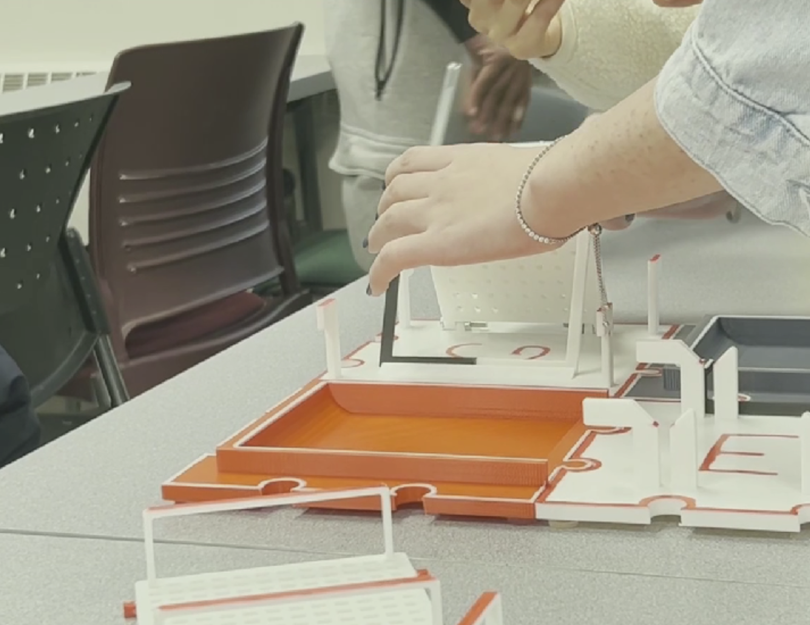
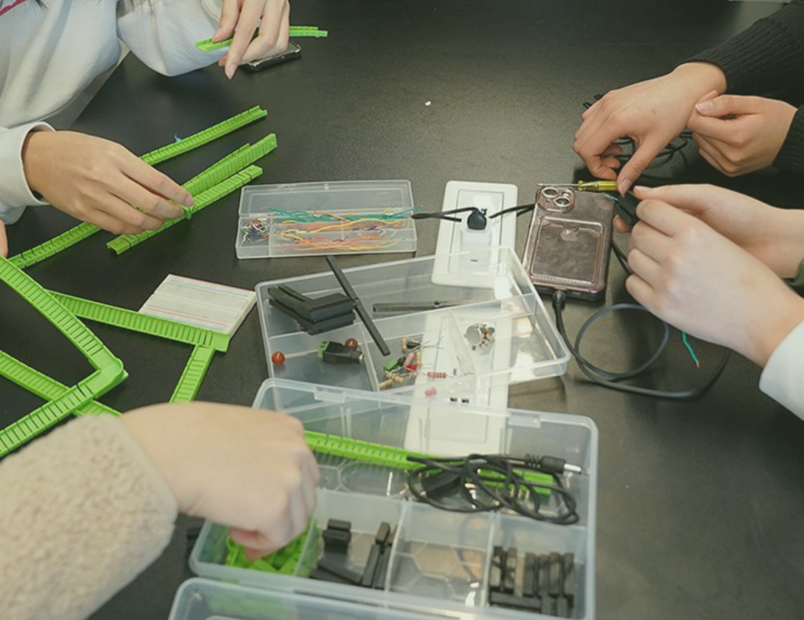

Cloud systems, backend tools, and hands-on engineering.
I enjoy building systems that make complex workflows easier to understand, test, and trust—from backend tooling to physical prototypes.
Post Deployment Application Verifier
An event-driven AWS platform that checks whether an application actually works after CloudFormation finishes deploying it. It catches “false-green” releases where the infrastructure succeeds but the running application is broken.
- CloudFormation success
- EventBridge
- Verifier Lambda
- PASS / FAIL report
- Checks API responses and optional Lambda, CloudWatch, and DynamoDB signals.
- Uses deterministic rules so every result is explainable and repeatable.
- Stores evidence-backed reports and recommended next steps in DynamoDB.
Robotic Baggage Delivery System
Our team built an end-to-end airport check-in and luggage transfer prototype. Verilog control logic ran on an FPGA to read sensors, drive motors, and coordinate baggage hand-offs in real time.
Goals
- Transfer baggage accurately between platforms.
- Validate passenger eligibility through barcode data.
- Meet the project’s cost and weight constraints.
Outcomes
- Coordinated the transfer mechanism with sensor feedback.
- Built a check-in interface with passenger-data validation.
- Validated modular components through CAD and technical drawings.



Assistive Kitchen Tool
Our team designed a modular preparation tray with interchangeable attachments for people with dual sensory impairments. We combined prototyping, user feedback, and design constraints to make food preparation safer and easier.
Goals
- Support safe preparation of different types of produce.
- Make attachments easy to identify, replace, and use.
- Build with durable, heat-tolerant materials.
Outcomes
- Tested attachments through low-vision simulations.
- Tracked fabrication costs and material usage.
- Used feedback to refine the modular design.


